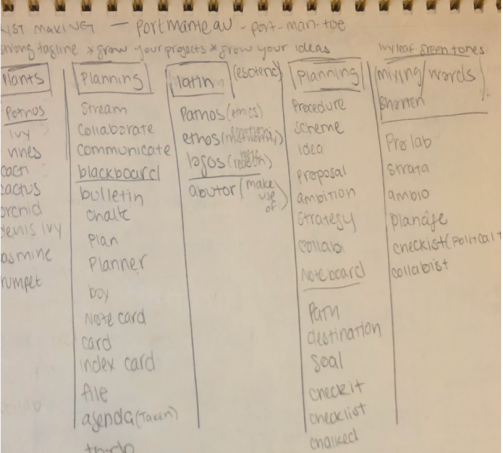
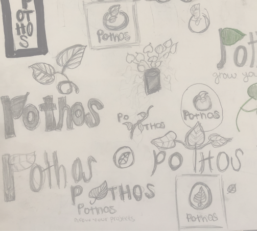
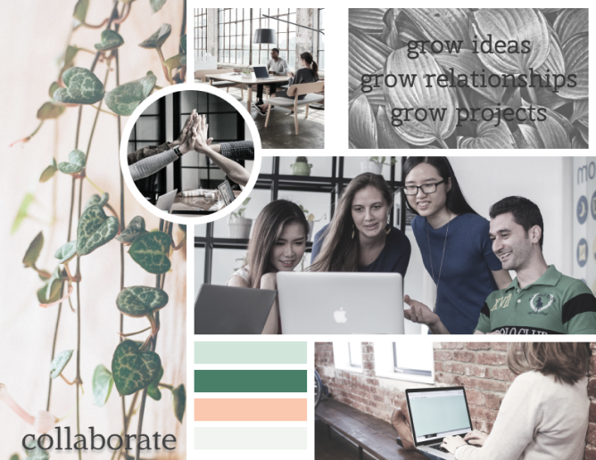
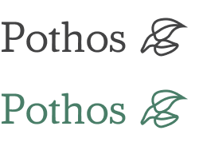
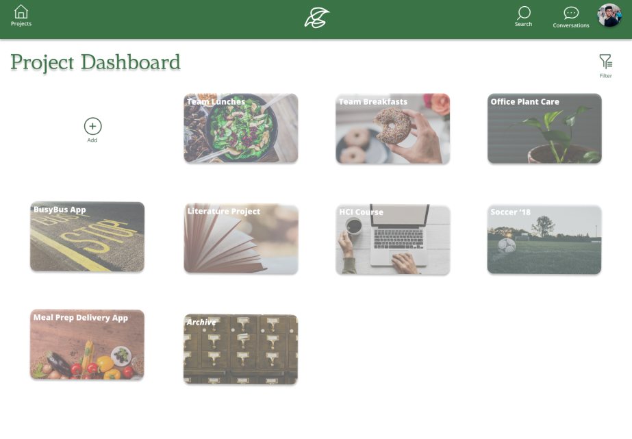
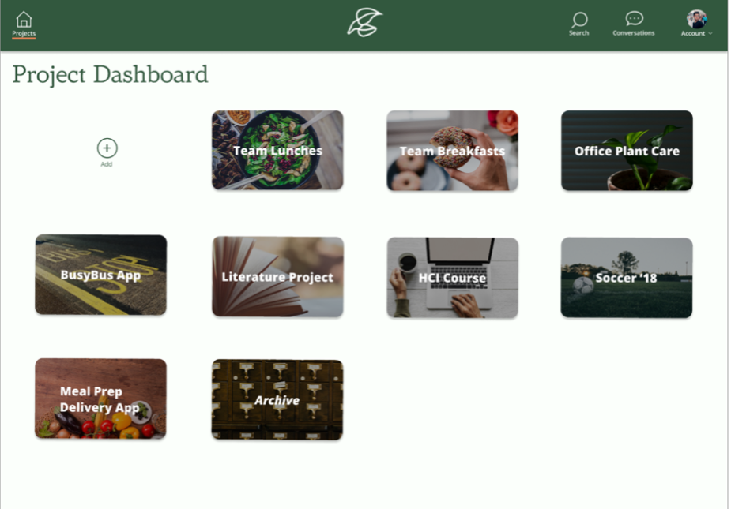
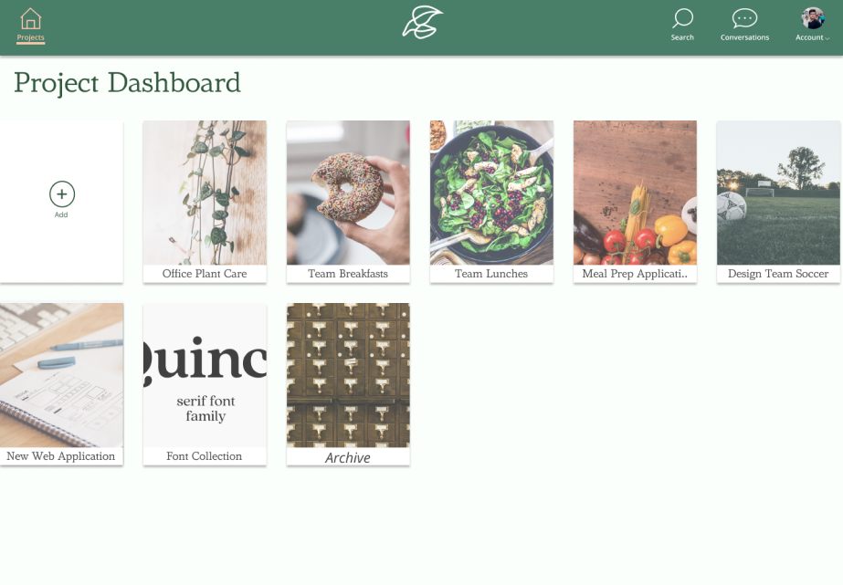

Research & Sketching
 Pothos, a type of ivy, is a sturdy plant that grows well with the right conditions. Being that the major paint point was addressing collaboration issues, Pothos was an analogy to create the right conditions for better project success. Tag-lines could be, “nourish your projects”, “grow your ideas”, “grow your project”.
Moodboard
Pothos is easy-going, dedicated, collaborative, open minded, relaxed and creative.
Style Guide

White
#FFFFFF
App Background
#FBFFFB
Inactive State
#F1F4F0
No Image Gray
#BDBDBD
Alert
#F2A27C
Button Green
#D2E5DB
Nav/Menu Bar
#497E68
Typography
#434344
Call to Action
#FAC7AF
AmstervarAlpha Default is the selected brand typeface for the artsy softness, yet the serfs add a bit of structure, extending brand reach to a wider audience. The logo is refined, minimalistic. The color palette is light with pastel tones that pair well with selected, stronger tones to establish trustworthiness and approachability.
VIEW STYLEGUIDEVisual Design & Testing
High Fidelity Mockups
With the branding work as resource and a guide, it was time to add visual interface to the wireframes; the design needed look simple and easy to use.
The large, visually appealing project cards were decided to be customizable so that users had room to be creative. Being that users requested a feature that allowed for a personalized interface, this matched the request and was eye catching.

A/B Testing
Preference tests were conducted on Usability Hub or in person through out the creation of the interface to discover user preferences. User preferences influenced which potential style or different elements were preferred by users.
VIEW ORIGINAL TESTED ELEMENTSPrototype Testing
An Invision clickable prototype was shared with the participants and the test was performed remotely using the Zoom share screen feature. The participants provided useful feedback and confirmed many of the design decisions that were made. Additionally, the participants also had many constructive suggestions to enhance the overall design.
Testing Results & Iterations
Active and inactive states were added to more clearly define the menu bar icons. Text boxes and forms were adjusted to have a more modern look. Project card was darkened to become more readable and text boxes were centered.

Final Design
Finished Prototype
Final iterations were made to enhance the design. Project cards were edited so they had a more refined appearance. The active and inactive states were further adjusted to enhance clarification. Card titles were given a trunkation character limit.
 VIEW FINAL PROTOTYPE
Conclusion
The user pain points that the research uncovered guided the application’s design. The design needed to be easy to use yet a great collaboration tool. I initially had doubts about creating something that could address both of these features without developing an application with scope creep, yet I managed to dial back enough to do so.
Reflecting back on everything, the only thing I would have done differently is added more collaboration features. Having a small, chat modal pop up at the bottom of the screen instead of moving to conversations would be helpful and would have streamlined workflow. Expanding on conversation capabilities would have also been interesting. Being able to chat with team members in a designated area for specific projects would be useful to users. Though, I held back on designing that for this version but will definitely add that feature for the next.
Overall, this project taught me that you can not test enough nor can you receive enough feedback. Pothos turned out to be as beautifully designed as it was because I continued to search for feedback, would test with users, and have the design critiqued. I also learned that it is important to be both creative and flexible during the design process. Getting hung up on how something should look or function can hold you back and iterating is extremely important.